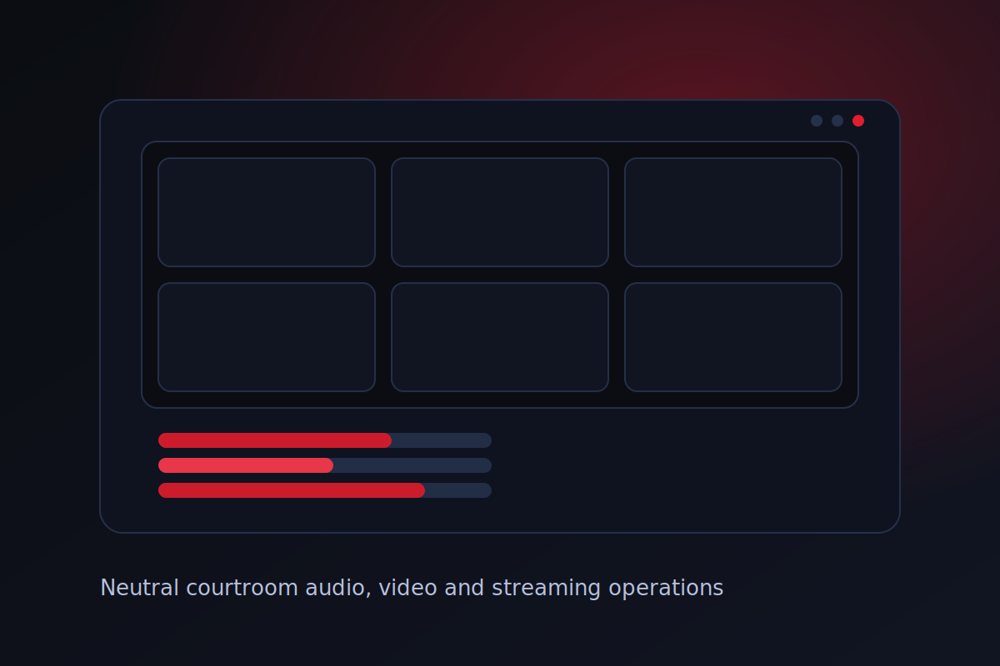

Independent courtroom technology
Neutral, reliable audio, video and livestreaming for court proceedings.
Digicourt provides specialist technical operations for hearings, inquiries and tribunals — ensuring intelligible audio, stable video, accurate transcription feeds, and controlled public access where required.
Australia only • Independent operator • Designed for proceedings
View services

Audio
Clear, intelligible speech for proceedings, transcription and records.
- Microphone and mix management
- Echo and noise control
- Dedicated transcription feeds
Video
Stable, court-appropriate video coverage designed for record integrity.
- Multi-camera coverage
- Evidence display support
- Remote witness integration
Livestreaming
Controlled public access streaming designed around courtroom realities.
- Access control options
- Bandwidth management
- Failover-ready workflows
Why Digicourt
Courtrooms are not meeting rooms. Digicourt exists specifically to support proceedings where reliability, neutrality, confidentiality and procedural integrity are essential.
- Independent from law firms and vendors
- Designed for Australian legal and tribunal environments
- Operated by experienced hearing and broadcast engineers
- Focused on calm, disciplined technical delivery